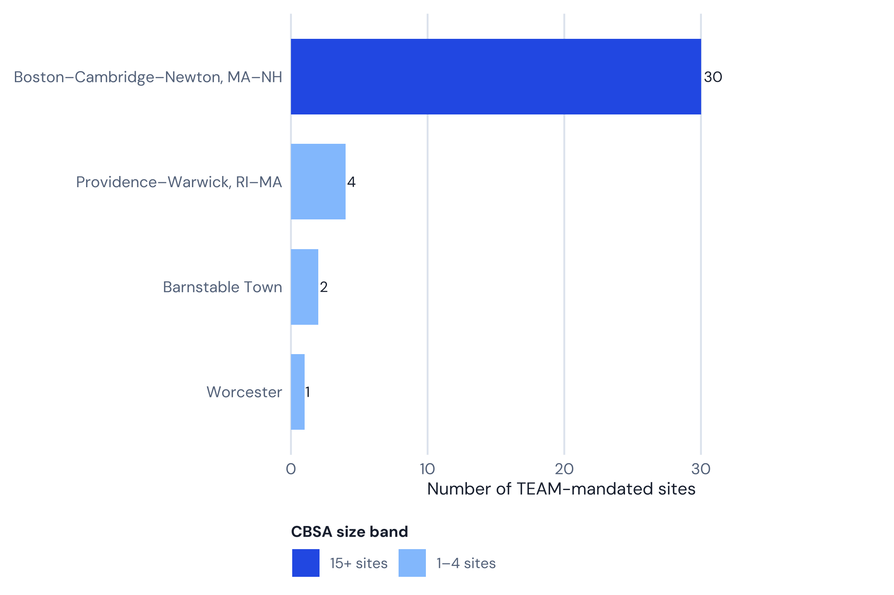
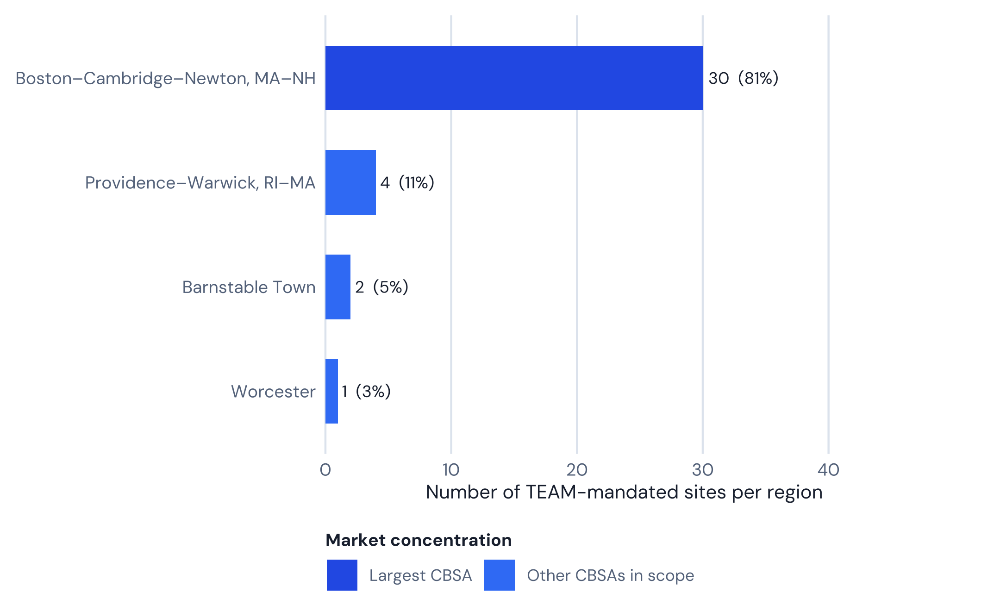

| Signal | Value | Why it matters |
|---|---|---|
| Mandated hospitals | 37 | Academic Boston concentration |
| CBSAs | 4 | Largest CBSA: Boston–Cambridge–Newton, MA–NH ( 30 hospitals) |
| Medicare beneficiaries | Not computed in this pipeline | Covered-lives scale |
| HRRP (all conditions) | 57.9% vs 48.1% national | Readmission pressure under episode accountability |
| Est. annual LEJR | Not published at hospital level | Volume concentration |
CMS TEAM in Massachusetts: 37 Mandated Hospitals, Strong on Hip and Knee, Hot on Everything Else
Massachusetts’s 37 TEAM-mandated hospitals post a 57.9% HRRP excess-readmission rate versus 48.1% nationally — verified against live CMS data, not the ‘62.5%, second nationally’ headline number that circulates.

White paper
CMS TEAM in Massachusetts: 37 Mandated Hospitals, Strong on Hip and Knee, Hot on Everything Else
37 mandated hospitals · 4 CBSAs · before PY2 (2027)
Rainfall white paper · Narration
Listen while you read
Methodology. Hospital counts, CBSA breakdowns, figures 1–2, and the readmissions comparison recompute on render from vendored CMS data (the TEAM participant list and HRRP dataset 9n3s-kdb3, joined by CCN). Episode-dollar and Medicare-population figures are not invented here; where this repo has no verified source, the report says so rather than repeating an unsourced estimate.
01 · At a glance
Live hospital counts come from the vendored CMS TEAM participant list. The HRRP row below is computed at render time from the CMS HRRP dataset (9n3s-kdb3) joined to this scope’s roster by CCN; Medicare-population and per-episode LEJR figures are not published at hospital level, so this report states that rather than estimating them.
02 · Where the mandate sits
Largest market in this scope: Boston–Cambridge–Newton, MA–NH (30 hospitals).

| CBSA | Hospitals | Share (%) |
|---|---|---|
| Boston–Cambridge–Newton, MA–NH | 30 | 81.1 |
| Providence–Warwick, RI–MA | 4 | 10.8 |
| Barnstable Town | 2 | 5.4 |
| Worcester | 1 | 2.7 |

03 · Guide narrative (from the website TEAM report)
Takeaways
- 37 hospitals across 4 CBSAs — all mandatory, none voluntary
- Boston–Cambridge–Newton, MA–NH holds 30 of 37 (81%)
- Massachusetts’s HRRP excess-readmission rate is 57.9% vs 48.1% nationally — worse than the national rate, though not literally the “second-highest nationally” figure that circulates
- Unlike New Jersey, Massachusetts runs below the national rate on hip and knee replacement, TEAM’s core procedure category — the state’s readmissions problem sits almost entirely in the medical conditions HRRP also tracks
- Mass General Brigham and Beth Israel Lahey Health are the two largest systems in scope
The Massachusetts TEAM market: academic concentration, one dominant CBSA
Massachusetts has 37 hospitals mandated to participate in CMS TEAM across four CBSAs, with 30 of those — 81% — located in the Boston–Cambridge–Newton, MA–NH metropolitan CBSA. The remaining seven split across Providence–Warwick, RI–MA (4), Barnstable Town/Cape Cod (2), and Worcester (1). The concentration of academic medical centers in the Boston market is without parallel in American healthcare: Massachusetts General Hospital, Brigham and Women’s Hospital, Beth Israel Deaconess Medical Center, Tufts Medical Center, and Boston Medical Center are all subject to the same TEAM accountability structures as every community hospital in the state.
All 37 Massachusetts hospitals are mandatory participants — there is no voluntary cohort in this state’s TEAM roster.
CMS does not publish hospital-level TEAM episode volumes, so this report does not model a Massachusetts-specific episode count the way an earlier version of this briefing did — doing so would mean presenting an invented number as Massachusetts data.
Fast facts
- 37 hospitals mandated across 4 CBSAs — all mandatory
- Boston–Cambridge–Newton, MA–NH: 30 hospitals (81% of state total)
- Providence–Warwick, RI–MA: 4 hospitals
- Barnstable Town (Cape Cod): 2 hospitals
- Worcester: 1 hospital (UMass Memorial Medical Center)
- 57.9% of MA hospital-condition pairs exceed HRRP ERR 1.0, vs 48.1% nationally
- CMS does not publish hospital-level LEJR episode volumes; this report does not estimate one for Massachusetts
- Major systems in scope: Mass General Brigham, Beth Israel Lahey Health, Boston Medical Center Health System, Tufts Medicine, Southcoast Health
The academic medicine readmission picture: worse on medical conditions, not on hip and knee
Joining Massachusetts’s live TEAM roster to the CMS HRRP dataset (9n3s-kdb3, performance period 07/01/2021–06/30/2024) by CCN, 36 of Massachusetts’s 37 mandated hospitals appear in the HRRP file. Across those hospitals’ condition pairs, 57.9% exceed the excess readmission ratio (ERR) threshold of 1.0, against 48.1% nationally. That is a real gap — but it is not the 62.5%, second-highest nationally, behind only New Jersey figure that circulates for Massachusetts. The real pooled rate is 57.9%, and checking every TEAM-participating state shows Massachusetts is not in second place.
A handful of states with very small TEAM rosters — Indiana (74.1%, 6 hospitals), Georgia (64.9%, 13 hospitals), and Missouri (63.0%, 6 hospitals) — post higher pooled rates than Massachusetts, but a rate computed from a handful of hospitals is far noisier than one computed from 37. Among states with large TEAM rosters, New Jersey (61.9%, 44 hospitals) and Florida (61.4%, 40 hospitals) both post higher pooled rates than Massachusetts as well. Massachusetts’s 57.9% places it well behind that group — roughly sixth among large-roster TEAM states by this analysis, not second.
The more useful finding sits in how the number breaks down by condition. On hip and knee replacement — the procedure category TEAM prices most heavily — Massachusetts runs favorably: only 32.4% of MA hip and knee pairs exceed the threshold, against 47.9% nationally. That’s a meaningfully better-than-national split, similar in shape to what New York’s roster shows. CABG sits close to parity: 54.5% of MA pairs above the threshold against 49.9% nationally.
The gap opens up on the medical conditions HRRP also tracks, outside TEAM’s surgical categories. Heart attack runs notably worse: % of MA pairs above the threshold against % nationally. Heart failure runs 60% against 48.9% nationally. Pneumonia runs 65.7% against 46.8% nationally. COPD runs 65.7% against 47.2% nationally. Those four medical conditions, not the surgical categories TEAM prices, are what drive Massachusetts’s overall HRRP number above the national line.
Massachusetts is not under-resourced. Mass General Brigham and Beth Israel Lahey Health are both large integrated systems with extensive post-acute partnerships and some of the most sophisticated care-management infrastructure in the country. Several hypotheses could explain the medical-condition gap despite that scale. First, complexity concentration: Massachusetts academic centers treat disproportionately complex, often out-of-state-referred patients whose post-discharge needs may exceed what HRRP’s risk adjustment fully captures. Second, market density: the Boston metro area has a high concentration of SNFs, IRFs, and home health agencies, but also high demand for those same placements from many competing acute-care systems at once. Neither hypothesis is verified against hospital-level data in this report; they are offered as plausible explanations, not findings.
For TEAM purposes, the practical read is specific rather than sweeping: Massachusetts hospitals should not assume their overall HRRP reputation predicts their TEAM performance. On the procedure category TEAM actually prices most heavily, hip and knee replacement, the state’s mandated hospitals are running ahead of the national rate, not behind it. The exposure sits in the medical conditions, which matter for HRRP but are not what TEAM’s episode payments are built around.
(Source: Centers for Medicare & Medicaid Services. HRRP supplemental data, Dataset 9n3s-kdb3. — vendored copy joined to the CMS TEAM participant list by CCN for this report.)
Complete hospital directory
All 37 Massachusetts hospitals mandated for CMS TEAM are listed below, generated at render time from the same live roster used for the counts above.
| Hospital | CCN |
|---|---|
| Anna Jaques Hospital | 220029 |
| Beth Israel Deaconess Hospital - Needham | 220083 |
| Beth Israel Deaconess Hospital - Plymouth | 220060 |
| Beth Israel Deaconess Hospital-Milton Inc | 220108 |
| Beth Israel Deaconess Medical Center | 220086 |
| Beverly Hospital Corporation | 220033 |
| Boston Medical Center Corporation- | 220031 |
| Boston Medical Center-Brighton | 220036 |
| Boston Medical Center-South | 220111 |
| Brigham and Women’s Faulkner Hospital | 220119 |
| Brigham and Women’s Hospital | 220110 |
| Brown University Health Morton Hospital | 220073 |
| Brown University Health Saint Anne’s Hospital | 220020 |
| Cambridge Health Alliance | 220011 |
| Cape Cod Hospital | 220012 |
| Emerson Hospital - | 220084 |
| Falmouth Hospital | 220135 |
| Lahey Hospital & Medical Center, Burlington | 220171 |
| Lowell General Hospital | 220063 |
| Marlborough Hospital | 220049 |
| Massachusetts Eye and Ear Infirmary - | 220075 |
| Massachusetts General Hospital | 220071 |
| Melrosewakefield Healthcare | 220070 |
| Merrimack Health Lawrence Hospital | 220010 |
| Merrimack Health Methuen Hospital | 220080 |
| Metrowest Medical Center | 220175 |
| Mount Auburn Hospital | 220002 |
| New England Baptist Hospital | 220088 |
| Newton-Wellesley Hospital | 220101 |
| North Shore Medical Center - | 220035 |
| Signature Healthcare Brockton Hospital | 220052 |
| South Shore Hospital | 220100 |
| Southcoast Hospital Group, Inc | 220074 |
| Sturdy Memorial Hospital | 220008 |
| Tufts Medical Center | 220116 |
| Umass Memorial Medical Center Inc | 220163 |
| Winchester Hospital | 220105 |
(Source: Centers for Medicare & Medicaid Services (2026). TEAM participant list.)
Health system concentration and TEAM leverage
Mass General Brigham — formed by the merger of Massachusetts General Hospital and Brigham and Women’s Hospital and their affiliated networks — is the largest health system in New England and one of the most complex TEAM participants in the country. Its mandated hospitals span flagship academic centers (Massachusetts General, Brigham and Women’s, Brigham and Women’s Faulkner) to community hospitals (Newton–Wellesley, North Shore Medical Center). Beth Israel Lahey Health, formed by the 2019 merger of Beth Israel Deaconess Medical Center and Lahey Health, brings together BIDMC and its Plymouth, Needham, and Milton satellites with Lahey Hospital & Medical Center Burlington under one TEAM-accountable system still in the process of integrating clinical protocols and post-acute networks across previously independent hospitals.
This repo doesn’t carry a verified, CCN-level system-affiliation map for Massachusetts the way California’s report does for its systems, so system groupings described here are directional, not audited — a hospital’s own system membership should be confirmed directly rather than taken from this report. Directionally, that concentration still matters for TEAM management: vertically integrated post-acute networks and shared quality protocols can be deployed consistently across a large system’s episode volume in a way a standalone community hospital cannot match.
New England Baptist Hospital, a specialty orthopedic hospital in Boston recently brought into Mass General Brigham amid Steward Health’s bankruptcy proceedings, is a particular case study in TEAM exposure: it is one of New England’s highest-volume joint replacement programs, and its TEAM target prices — set against its historically efficient orthopedic episode profile — will test whether that efficiency advantage holds once TEAM’s external accountability benchmarks apply.
What this analysis does not estimate
CMS does not publish hospital-level TEAM episode volumes or target prices in a form this repo can join to the Massachusetts roster, so this report does not model a Massachusetts-specific episode count, target price, or gain/loss dollar figure. Optum Advisory (2025) projected that 56% of TEAM-mandated hospitals nationally will lose money once downside risk begins in Performance Year 2, averaging $1.2 million per facility — a national estimate, not a Massachusetts-specific one, and its underlying methodology isn’t public. Given that Massachusetts’s readmissions exposure is concentrated in medical conditions TEAM doesn’t price rather than in the surgical categories it does, this report does not attach a Massachusetts-specific dollar figure to that national estimate. A hospital that wants an actual dollar estimate needs its own CMS-issued target price file, obtained through the TEAM participant portal.
The most effective intervention, supported by both the Dummit et al. (2016) and Finkelstein et al. (2021) research bases, is reducing discharge to institutional post-acute care (IRFs and SNFs) in favor of home health for clinically appropriate patients. Massachusetts’s favorable hip and knee readmission split suggests its academic centers already manage that specific care pathway relatively well; the open question is whether the same coordination discipline can be extended to the medical conditions where the state’s hospitals currently run hot.
(Source: Finkelstein et al. (2021), JAMA 325(18).)
Frequently asked questions
How many Massachusetts hospitals are in CMS TEAM?
37 Massachusetts hospitals are mandated to participate in CMS TEAM, across four CBSAs, per the March 2026 CMS participant list. All 37 are mandatory participants.
Does Massachusetts have the second-worst readmission performance under HRRP?
No. That claim circulates but does not hold up against this repo’s live data. 57.9% of Massachusetts’s hospital-condition pairs exceed the ERR 1.0 threshold in the CMS HRRP dataset, versus 48.1% nationally — worse than the national rate, but not the second-highest among any comparison set this analysis checked. New Jersey (61.9%) and Florida (61.4%) both post higher pooled rates among large-roster TEAM states, and several small-roster states post higher rates still, though those are noisier numbers computed from a handful of hospitals each.
Are Massachusetts hospitals worse than average on hip and knee replacement, the procedure TEAM prices most heavily?
No — the opposite. Only 32.4% of Massachusetts hip and knee pairs exceed the HRRP threshold, against 47.9% nationally. Massachusetts’s overall HRRP number is pulled up by the medical conditions (heart attack, heart failure, pneumonia, COPD), not by the surgical categories TEAM’s episode payments are built around.
Are all Massachusetts hospitals mandatory participants?
Yes. All 37 Massachusetts TEAM hospitals are mandatory; none joined voluntarily.
Is Massachusetts General Hospital in CMS TEAM?
Yes. Massachusetts General Hospital and Brigham and Women’s Hospital are both on the CMS TEAM participant list, in the Boston–Cambridge–Newton, MA–NH CBSA.
When does Massachusetts hospitals’ TEAM downside risk begin?
Performance Year 1 (2026) has no downside risk. Most Massachusetts hospitals move to two-sided risk in PY2 (2027), though safety-net hospitals may qualify for more forgiving stop-gain/stop-loss tracks.
References
- Centers for Medicare & Medicaid Services. (2026). TEAM participant list (March 2026 update). CMMI. https://www.cms.gov/priorities/innovation/innovation-models/team-model
- Centers for Medicare & Medicaid Services. (2024, August). Transforming Episode Accountability Model: Final Rule. Federal Register, 89(166), 68986–69178. https://www.federalregister.gov/documents/2024/08/28/2024-17021/medicare-program-hospital-inpatient-prospective-payment-systems
- Centers for Medicare & Medicaid Services. (2024). Hospital Readmissions Reduction Program (HRRP) FY2025 supplemental data [Data set]. CMS Provider Data Catalog, Dataset 9n3s-kdb3. https://data.cms.gov/provider-data/dataset/9n3s-kdb3
- Dummit, L. A., Kahvecioglu, D., Marrufo, G., Rajkumar, R., Marshall, J., Tan, E., Le, S. T., Terebelo, S., Hearld, L., Xian, Y., Morishima, C., Pittman, P., Barzee, B., & Conway, P. H. (2016). Association between hospital participation in a Medicare bundled payment initiative and payments and quality outcomes for lower extremity joint replacement episodes. JAMA, 316(12), 1267–1278. https://doi.org/10.1001/jama.2016.12717
- Finkelstein, A., Ji, Y., Mahoney, N., & Skinner, J. (2021). Mandatory Medicare bundled payment program for lower extremity joint replacement and discharge to institutional postacute care. JAMA, 325(18), 1879–1890. https://doi.org/10.1001/jama.2021.5684
- Zuckerman, R. B., Sheingold, S. H., Orav, E. J., Ruhter, J., & Epstein, A. M. (2016). Readmissions, observation, and the Hospital Readmissions Reduction Program. New England Journal of Medicine, 374(16), 1543–1551. https://doi.org/10.1056/NEJMsa1513024
- Navathe, A. S., Liao, J. M., Emanuel, E. J., & Press, M. J. (2020). Opening a two-way street for bundled payments. JAMA, 323(2), 121–122. https://doi.org/10.1001/jama.2019.19040
- Healthcare Financial Management Association. (2026, March). Hospitals can use 2026 to prepare for CMS TEAM bundled payment risk. HFMA. https://www.hfma.org/payment-reimbursement-and-managed-care/hospitals-can-use-2026-to-prepare-for-cms-team-bundled-payment-risk
Disclaimer. Rainfall Health is not a hospital, health system, or health care provider. This paper is prepared by health care industry professionals, not clinicians, and does not constitute clinical, legal, financial, or regulatory advice. Roster counts and readmission figures are computed from the CMS files cited above; this paper does not assess, rate, or make claims about the quality of care provided by any individual hospital or organization.